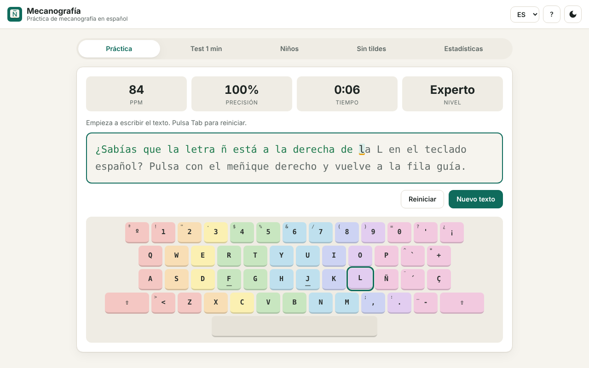
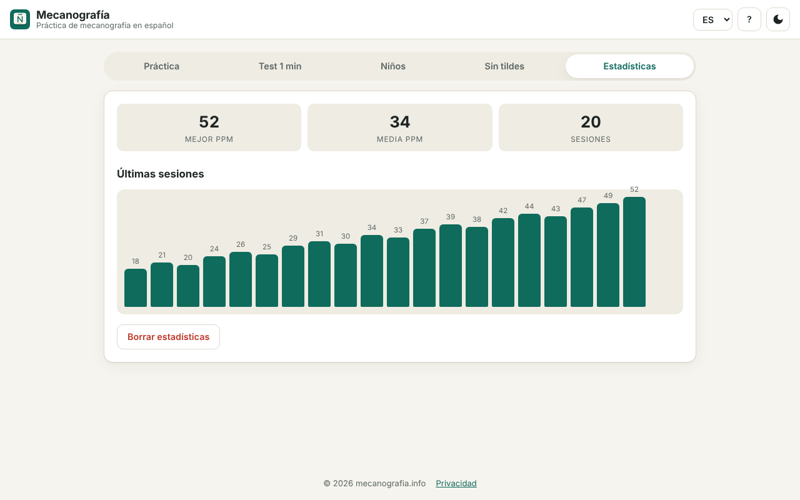
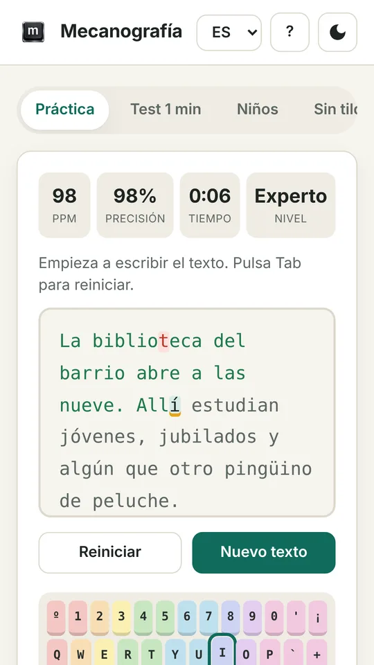
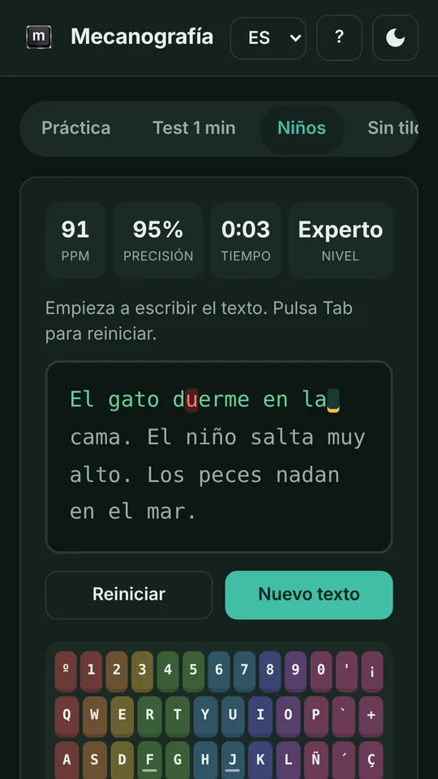
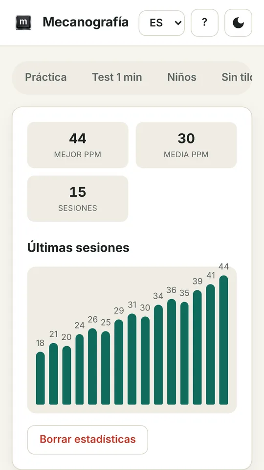

Acerca de Mecanografía Info
Mecanografía Info es un tutor de mecanografía pensado para el español. Practicas con textos reales con tildes, ñ, ¿ y ¡, ves tu velocidad y tu precisión en tiempo real y aprendes a escribir sin mirar el teclado.
Un poco de historia
La mecanografía nació con las máquinas de escribir a finales del siglo XIX. Pronto se vio que quien escribía con los diez dedos y sin mirar las teclas era mucho más rápido y cometía menos errores. Hoy el teclado está en el ordenador, la tablet y el móvil, pero la idea es la misma: cada dedo tiene sus teclas y los dedos descansan en la fila central, sobre la F y la J.
El español añade sus propios retos: acentos, la ñ, la diéresis y los signos de apertura ¿ y ¡. Muchos cursos de mecanografía están pensados para el inglés y no los practican. Mecanografía Info nació para cubrir ese hueco con textos en español de verdad.
Cómo es la aplicación





Qué incluye
Práctica
Textos de varios niveles, de frases cortas a párrafos con más acentos y signos.
Test de 1 minuto
Mide tus pulsaciones por minuto (PPM) y tu precisión en un minuto exacto.
Modo niños
Frases cortas y sencillas para ganar confianza, con la precisión antes que la velocidad.
Modo sin tildes
Para empezar sin acentos y añadirlos cuando ya domines la posición de las teclas.
Teclado con colores
Distribución española (ISO) o de EE. UU., con un color para cada dedo.
Estadísticas
Mejor PPM, media y gráfico de tus últimas sesiones.
En qué plataformas puedes probarla
- En el navegador: abre mecanografia.info/ms-app en Chrome, Edge, Firefox o Safari, en ordenador, tablet o móvil. Puedes instalarla como aplicación (PWA) con el botón «Instalar app» o desde el menú del navegador.
- Windows 10 y 11: disponible en Microsoft Store.
- Android: muy pronto en Google Play.
- Chrome: también existe una extensión en Chrome Web Store.
Detalles que conviene saber
- Funciona sin conexión. Tras la primera visita, la aplicación se guarda en tu dispositivo y puedes practicar sin internet.
- Mejor con teclado físico. En el móvil y la tablet funciona con el teclado de la pantalla, pero para aprender mecanografía de verdad recomendamos un teclado físico o Bluetooth.
- Tus datos se quedan contigo. Los resultados se guardan solo en tu dispositivo. Si cambias de navegador o de equipo, empiezas de cero.
- Interfaz en tres idiomas. Español, catalán e inglés. Los textos de práctica siguen el idioma elegido.
- Sin registro, sin publicidad y sin pagos. Todo el contenido es gratuito.
Por qué es útil para niños
Aprender pronto la posición correcta de los dedos evita malos hábitos difíciles de corregir después. El modo niños usa frases cortas y amables, el teclado de colores muestra qué dedo pulsa cada tecla y las estadísticas convierten la práctica en un pequeño reto personal. Además, la aplicación no tiene anuncios ni recoge datos, así que es un entorno tranquilo para practicar en casa o en clase.
Por qué es útil para adultos
Escribir sin mirar el teclado ahorra tiempo cada día: correos, informes, chats y trabajos se terminan antes y con menos erratas. Para estudiantes, oposiciones o teletrabajo, unos minutos diarios de práctica se notan en pocas semanas. Y si ya escribes rápido, el test de 1 minuto te ayuda a medir y mejorar tu marca.
Disponible en todo el mundo
Mecanografía Info está pensada para cualquier persona que escriba en español, viva donde viva, sin límites por país. La única excepción son los países sujetos a sanciones internacionales, como Rusia y Corea del Norte, donde la aplicación no se distribuye.
Privacidad
La aplicación no requiere registro, no recopila datos personales y no incluye publicidad ni analítica. Lee la política de privacidad completa.